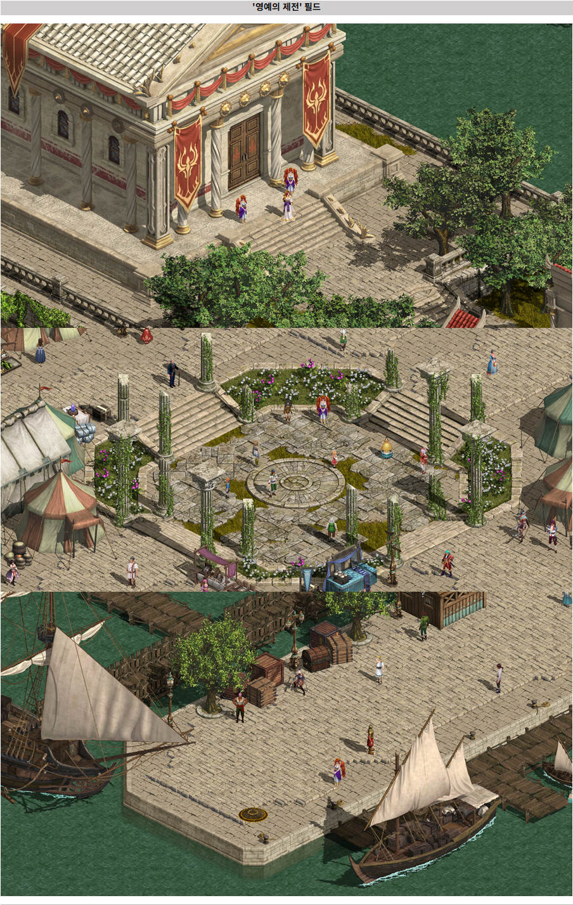
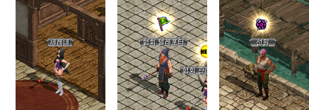
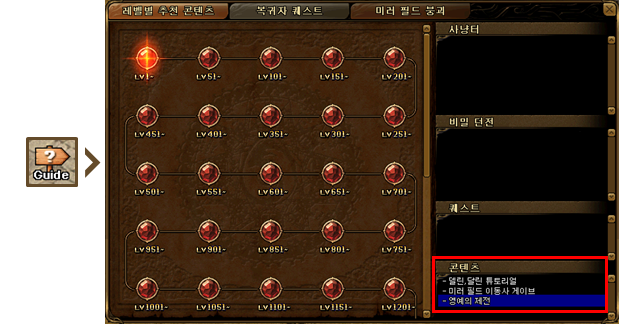
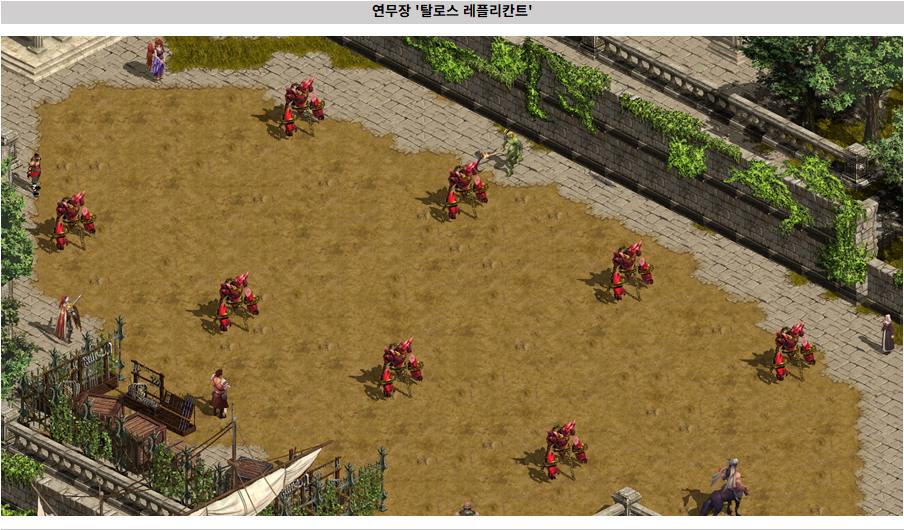

メニュー
韓国 2026/02 アップデート
[重要！] 韓国公式の情報を基にしています。
誤訳や韓国独自仕様の可能性もありますので、予めご了承下さい。
2月25日（水）更新されるコンテンツの詳細履歴を以下のようにご案内いたします。
冒険者の皆様はご利用にご参考ください。
1. 新規フィールド栄誉の祭典
- アサルトチャレンジをはじめ、様々なコンテンツの通路として機能する新規フィールド栄誉の祭典が追加されます。
- 冒険家協会ブルンネンシュティグ支店のNPCと会話を通じて栄誉の祭典先行クエストを進行できます。
- 栄誉の祭典に今後様々なコンテンツが追加される予定であり、アップデート時に追加案内させていただきます。

栄誉の祭典は以下の2つの方法で進入できます。
1) NPC会話の移動

- 冒険家協会バーセレーネNPC
- 冒険家協会ブルンネンシュティッグ支店協会テレポーターNPC
- 港町ブリッジヘッド（11、65）、シュトラセラト（154、130）、ボルティッシュ（67、35）船員NPC

- ゲーム内ミニマップ下部のGuideアイコンをクリック→コンテンツ栄誉の祭典を選択
- 栄誉の祭典の演武場に自分の攻撃力を測定できるタロスレプリカントが配置されます。
- タロスレプリカントはレベルが高いほど防御力と最終ダメージ補正、抵抗値が上昇します。

- 1レベル：防御能力がなく、純粋な攻撃力測定に適しています。
- 1250レベル：低レベルの防御力と抵抗が適用され、基本的な実戦環境を想定したテストが可能です。
- 1500レベル：中レベルの防御力と抵抗が適用され、一般的な高難易度戦闘環境を想定したテストに適しています。
- 2000レベル：高レベルの防御力と抵抗が適用され、最終設定検証や上位コンテンツコントラストテストに活用できます。
2. アサルトチャレンジ進行位置変更
- アサルトチャレンジの進行位置が栄誉の祭典に変更されます。
- 冒険家協会バーセレーネNPCと会話時にアサルトチャレンジを利用できる場所に移動されます。
- 「ガイド」のコンテンツ内「アサルトチャレンジ」の移動位置が栄誉の祭典「セレーネ」NPC近くに変更されます。
3. 限界突破クエスト改善
- 限界突破クエストの進行疲労も減少および進入障壁緩和のためのクエスト進行方式が改善されます。
- クエスト進行中の一部の段階で目的地フィールドと座標に移動するように改善されます。
2) クエストアイテム支給及びドロップ率変更
| 限界突破 | クエスト | 改善事項 |
|---|---|---|
| Lv 1 | 秘められし力(2) | [2段階] 「妖精の蜜」が相互作用で5個ずつ支給され、待機時間が削除されます。 |
| Lv 2 | 苦い忍耐(2) | [1段階] ディトの装身具製作が100%成功し、オブジェクトとの相互作用で獲得するアイテムが3個、10個、10個の順で支給され、待機時間が削除されます。 |
| Lv 3 | 幽霊の遊戯(2) | [2段階] 「地縛霊」モンスターのリスポーン時間が減少します。 |
| Lv 4 | 噴水と祝福と石の欠片(1) | [3段階] 「貪欲の結晶」のドロップ率が100%に変更されます。 |
| Lv 4 | 噴水と祝福と石の欠片(1) | [5段階] 「蚊の群れの死骸」「ウジの体液」のドロップ率が100%に変更されます。 |
| Lv 5 | ある錬金術師の研究 | [1段階] 「腐った骨」のドロップ率が100%に変更されます。 |
| Lv 5 | 錬金術師の悲哀 | [1, 3, 5段階] 「魂の水晶球」のドロップ率が100%に変更されます。 |
[引用元] 韓国公式ページ